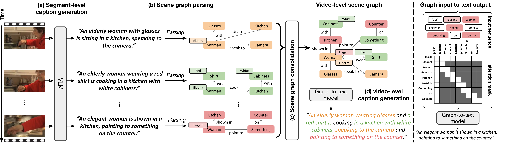
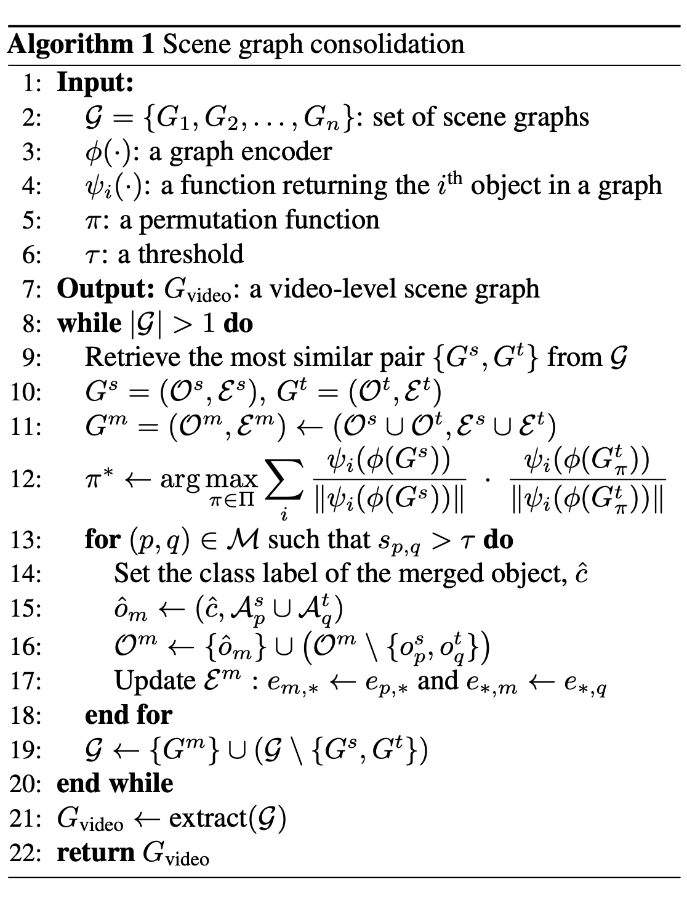
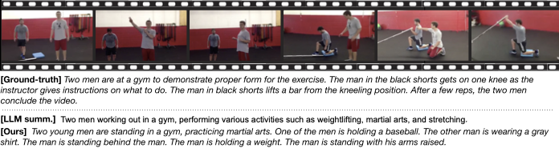

Recent advances in vision-language models have led to impressive progress in caption generation for images and short video clips. However, these models remain constrained by their limited temporal receptive fields, making it difficult to produce coherent and comprehensive captions for long videos. While several methods have been proposed to aggregate information across video segments, they often rely on supervised fine-tuning or incur significant computational overhead. To address these challenges, we introduce a novel framework for long video captioning based on graph consolidation. Our approach first generates segment-level captions—corresponding to individual frames or short video intervals—using off-the-shelf visual captioning models. These captions are parsed into scene graphs, which are then consolidated into a unified graph representation that preserves both holistic context and fine-grained details throughout the video. A lightweight graph-to-text decoder produces the final video-level caption. This framework effectively extends the temporal understanding capabilities of existing models without requiring any additional fine-tuning on long video datasets. Experimental results show that our method significantly outperforms existing LLM-based consolidation approaches, achieving strong zero-shot performance while substantially reducing computational costs.

Our framework consists of four stages:
The input video is divided into temporal segments (individual frames or short clips), and an off-the-shelf VLM generates a caption for each segment. Our framework is flexible and works with any VLM backbone, including image-centric (BLIP, BLIP2) and video-centric (InternVL2.5) models.
Each segment-level caption is converted into a scene graph consisting of objects, attributes, and their relationships, using a textual scene graph parser (FACTUAL-MR). This transforms unstructured text descriptions into structured semantic representations.
Segment-level scene graphs are merged into a unified graph via Hungarian matching over graph-encoder embeddings with a similarity threshold τ. The consolidation preserves both the holistic context and fine-grained details across the entire video. A prioritized subgraph extraction step optionally emphasizes salient visual information.
A lightweight graph-to-text model (BERT-base encoder + T5-base decoder, 235M parameters) trained solely on external text corpora translates the consolidated graph into the final video-level caption — no fine-tuning on target long video datasets required.

Pseudocode of the scene graph consolidation procedure (Step 3).
Zero-shot video captioning on MSR-VTT and MSVD test sets. SGVC consistently outperforms LLM-based video understanding methods (VidIL, Video ChatCaptioner) and an LLM summarization baseline (Mistral-7B). † indicates use of few-shot exemplars from the target dataset; bold marks the best among methods not using reference captions.
| Method | Backbone VLM | B@4 | METEOR | CIDEr | FBERT |
|---|---|---|---|---|---|
| MSR-VTT | |||||
| VidIL | BLIP+CLIP | 3.2 | 14.8 | 3.1 | 0.225 |
| VidIL† | BLIP+CLIP | 13.6 | 20.0 | 20.2 | 0.490 |
| Video ChatCaptioner | BLIP2 | 13.2 | 22.0 | 16.5 | 0.436 |
| Summarization w/ Mistral-7B | BLIP | 9.6 | 21.6 | 10.8 | 0.395 |
| Summarization w/ Mistral-7B | BLIP2 | 11.5 | 23.1 | 15.4 | 0.397 |
| SGVC (Ours) | BLIP | 17.7 | 22.5 | 24.0 | 0.490 |
| SGVC (Ours) | BLIP2 | 18.4 | 23.1 | 26.1 | 0.487 |
| MSVD | |||||
| VidIL | BLIP+CLIP | 2.5 | 16.5 | 2.3 | 0.238 |
| VidIL† | BLIP+CLIP | 30.7 | 32.0 | 60.3 | 0.674 |
| Video ChatCaptioner | BLIP2 | 22.7 | 31.8 | 35.8 | 0.550 |
| Summarization w/ Mistral-7B | BLIP | 15.2 | 28.3 | 30.3 | 0.527 |
| Summarization w/ Mistral-7B | BLIP2 | 22.5 | 31.9 | 41.6 | 0.558 |
| SGVC (Ours) | BLIP | 22.6 | 30.2 | 50.2 | 0.589 |
| SGVC (Ours) | BLIP2 | 25.3 | 32.0 | 53.3 | 0.597 |
Zero-shot video paragraph captioning on the ActivityNet Captions ae-val set. SGVC substantially outperforms both LLM-based video understanding methods and LLM summarization baselines, including those using the proprietary GPT-4o mini.
| Method | Backbone VLM | B@4 | METEOR | CIDEr | FBERT |
|---|---|---|---|---|---|
| VidIL | BLIP+CLIP | 1.0 | 5.8 | 4.6 | 0.125 |
| VidIL† | BLIP+CLIP | 2.9 | 7.6 | 3.3 | 0.323 |
| Video ChatCaptioner | BLIP2 | 2.4 | 8.9 | 1.6 | 0.200 |
| Summarization w/ Mistral-7B | BLIP | 3.4 | 9.4 | 7.5 | 0.276 |
| Summarization w/ Mistral-7B | BLIP2 | 4.1 | 10.4 | 9.6 | 0.295 |
| Summarization w/ Mistral-7B | InternVL2.5 | 4.5 | 10.8 | 11.6 | 0.319 |
| Summarization w/ GPT-4o mini | BLIP | 4.6 | 10.2 | 10.3 | 0.300 |
| Summarization w/ GPT-4o mini | BLIP2 | 5.0 | 10.6 | 12.1 | 0.317 |
| Summarization w/ GPT-4o mini | InternVL2.5 | 5.8 | 11.4 | 15.3 | 0.336 |
| SGVC (Ours) | BLIP | 6.7 | 11.6 | 16.6 | 0.322 |
| SGVC (Ours) | BLIP2 | 7.4 | 12.4 | 20.9 | 0.331 |
| SGVC (Ours) | InternVL2.5 | 8.0 | 13.2 | 24.1 | 0.338 |
Compared to LLM-based baselines, SGVC produces captions that preserve object identities, relationships, and fine-grained details consistently across segments.
Video captioning on MSR-VTT.

Video paragraph captioning on ActivityNet Captions.
Computational cost comparison on the MSR-VTT test set. SGVC achieves the best captioning performance (CIDEr) while using an order of magnitude fewer parameters than LLM summarization baselines, and without relying on proprietary GPT APIs or few-shot references.
| Method | VLM | Params (B) | GPU (GB) | Time (s) | CIDEr |
|---|---|---|---|---|---|
| VidIL† | BLIP+CLIP | 0.67 | 3.57 | 1.32 | 20.2 |
| Video ChatCaptioner | BLIP2 | 3.75 | 14.53 | 3.65 | 16.5 |
| Summarization w/ Mistral-7B | BLIP | 7.50 | 14.50 | 1.27 | 10.8 |
| Summarization w/ Mistral-7B | BLIP2 | 11.00 | 28.20 | 1.51 | 15.4 |
| SGVC (Ours) | BLIP | 0.74 | 5.07 | 1.14 | 24.0 |
| SGVC (Ours) | BLIP2 | 4.24 | 18.40 | 1.37 | 26.1 |
@inproceedings{chu2025finegrained,
title={Fine-Grained Captioning of Long Videos through Scene Graph Consolidation},
author={Sanghyeok Chu and Seonguk Seo and Bohyung Han},
booktitle={Forty-second International Conference on Machine Learning},
year={2025},
}